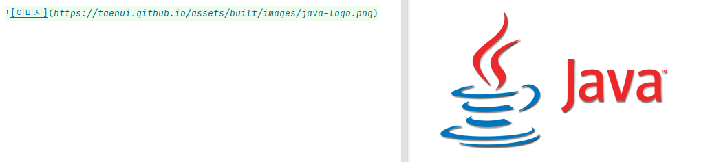

마크다운(kramdown) 사용법
마크다운은 사람들이 읽기 쉽고 쓰기 쉬운 플레인 텍스트 포맷을 사용하여, 서식이 있는 문서를 작성하기 위해 만들어진 마크업 언어입니다. 2004년 존 그루버가 RSS 1.0 의 공저자인 애런 스워츠와 협업을 통해 만들었으며, 아래 이미지를 보시면 보다 쉽게 이해가 됩니다. 화면 왼쪽이 작성된 마크다운 코드이고, 오른쪽이 서식이 적용된 HTML 결과 입니다.
마크다운 파서의 구현체 는 굉장히 다양하게 존재하는데, 구현체 마다 표현법이 다양하기 때문에, 내 맘에 잘 맞는 구현체를 고르기 위해서 babelmark3 에서 테스트를 해보는 방법을 추천 드립니다. babelmark3 에서는 같은 마크업 코드를 서로 다른 구현체에서 어떻게 표현해 주는지 한번에 출력을 해주기 때문에 유용하게 활용할 수 있습니다.
CommonMark
CommonMark 는 서로다른 기능으로 구현된 마크다운의 표준 문법을 정의하는 프로젝트입니다. CommonMark 에서 정의한 스펙에 따라 이를 기반으로 많은 마크다운이 탄생하였으며 Kramdown 또한 하나의 구현체 입니다.
Kramdown
최근 많은 개발자들이 아이디.github.io 주소를 가지는 블로그 사이트를 운영하는 추세입니다. 바로 GitHub Pages 를
이용한 블로그 운영을 하는 것 인데요, GitHub Pages 는 Static Page Generator 를 기반으로
생성된 정적 웹페이지를, GitHub 기반으로 호스팅하는 방식의 블로그 입니다.
수 많은 Static Page Generator 중에서, GitHub 의 CEO 가 만든 생성기인 지킬(Jekyll) 은 가장
인기있는 생성기 중 하나이며, 이 지킬 내에서 지원하는 마크다운이 바로 Kramdown 입니다. 때문에, 아이디.github.io 의 블로그를 운영하고
싶다면 Kramdown 의 사용법을 알아두셔야 하겠습니다.
마크다운(Kramdown) 사용법
크램다운 홈페이지의 레퍼런스 문서에 정리된 내용을 바탕으로 사용법을 아래와 같이 정리해 보았습니다.
헤더(Header) 표현(1)
헤더를 표현하는 첫번째 방법은, # 의 갯수를 통해 6가지 크기로 표현하는 방법이다. 아래 그림에서 왼쪽이 표현법, 오른쪽이
표현된 결과화면이다.
헤더(Header) 표현(2)
헤더를 표현하는 두번째 방법은, 가장 자주 사용될 수 있는 H1 크기와 H2 크기를 아래와 같이 표현하는 것이다.

이탤릭(Italic) 표현
이탤릭체는 * 혹은 _ 를 통해 아래와 같이 두가지 방법으로 표현할 수 있다.
진하게(Bold) 표현
볼드체 표현은 ** 혹은 __ 를 통해 아래와 같이 두가지 방법으로 표현할 수 있다.
링크(Link) 걸기
이미지(Image) 표현

각주(Footnotes) 표현
각주는 선언부와 표현부를 나누어 아래와 같이 표현 가능하다.
선언부
선언부 각주1[^1].
선언부 각주2[^2].
위와 같이 표현하면, 아래와 같이 각주로 표시된다.
표현부
각주에 대한 설명을 달기위해서는 아래와 같이 표현한다.
[^1]: 각주1에 대한 설명
[^2]: 각주2에 대한 설명
각주의 선언부를 클릭하면, 아래 표현부로 이동하게 된다.
블락인용구(Blockquotes) 표현
> 기호를 사용하여 블락인용구를 표현할 수 있다.
코드 블락(Code Block) 표현(1)
띄어쓰기 4번을 통해 코드블락을 표현할 수 있다.
표현법
띄어쓰기를 통한 코드블락 표현
코드블락 적용결과
띄어쓰기를 통한 코드블락 표현
코드 블락(Code Block) 표현(2)
물결무늬 감싸기를 통한 코드블락 표현도 가능하다.